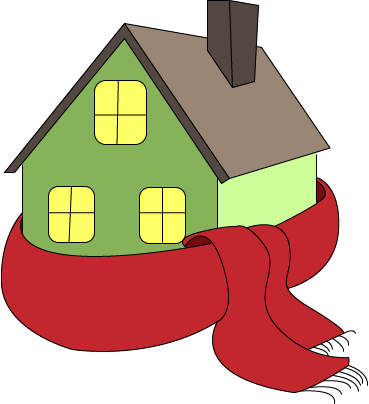
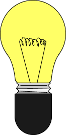
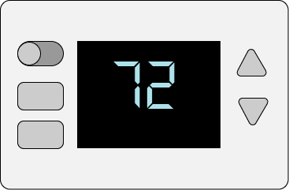
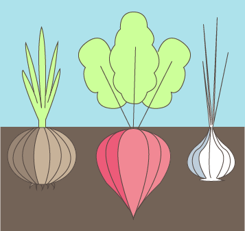
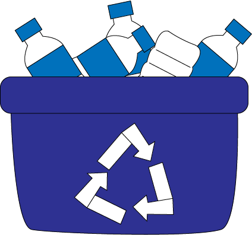

Consider walking or riding a bike for an alternative that is good for the environment and your body to avoid carbon emissions completely! Carpooling and public transportation drastically reduce CO2 emissions by spreading them out over many riders.
Electric cars emit no CO2 if they’re charged with clean electricity, and that’s a huge way to minimize your carbon footprint!
Driving style
Speeding and unnecessary acceleration reduce mileage
by up to 33%, waste gas and money, and increase your carbon footprint.
Tire inflation and other tuning
Properly inflated tires improve your
gas mileage by up to 3%. It also helps to use the correct grade of motor oil,
and to keep your engine tuned, because some maintenance fixes, like fixing faulty
oxygen sensors, can increase fuel efficiency by up to 40%.
Avoid traffic
Being stuck in traffic wastes gas and unnecessarily creates
CO2. Use traffic websites and apps and go a different way or wait if you can.
Reduce drafts and air leaks with caulk, insulation, and weather stripping. Many states offer programs and incentives to facilitate this, and a great example is Energy Upgrade California.
Turn off lights you’re not using and when you leave the room. Replace incandescent light bulbs with compact fluorescent or LED ones.
Don’t set it too high or low. Install a programmable model to turn off the heat/air conditioning when you’re not home.
It has been estimated that 13% of U.S. greenhouse gas emissions result from the production and transport of food. Transporting food requires petroleum-based fuels, and many fertilizers are also fossil fuel-based. Consider growing your own garden!
It takes a lot of resources to raise cows, and it’s especially bad if you buy beef from somewhere like Brazil, where it was grazed on land that used to be tropical forest but was cleared for agricultural use. Deforestation is a top contributor to carbon emissions and thus climate change.
Lower the amount of energy used to pump, treat, and heat water by washing your car less often, using climate-appropriate plants in your garden, installing drip irrigation so that plants receive only what they need, and making water-efficient choices when purchasing shower heads, faucet heads, toilets, dishwashers and washing machines.
It has been estimated that 29% of U.S. greenhouse gas emissions result from the “provision of goods,” which means the extraction of resources, manufacturing, transport, and final disposal of “goods” which include consumer products and packaging, building components, and passenger vehicles, but excluding food. By buying used products and reselling or recycling items you no longer use, you dramatically reduce your carbon footprint from the “provision of goods.”
